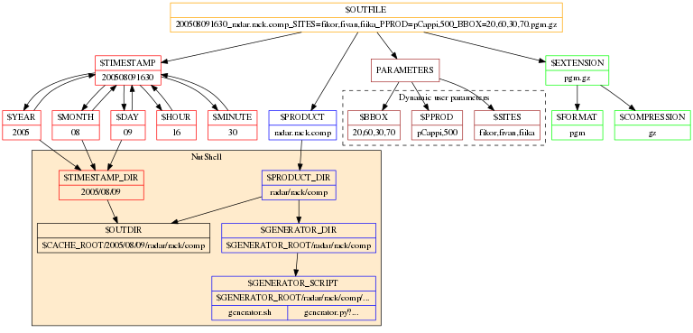

Product requests¶
Product server uses three classes in formulating product requests.
NutProduct¶
Product generator service appicable on the command line or as a library
Variable parsing¶
Main variables¶
| Variable | Description | Example |
|---|---|---|
PRODUCT |
Product id, eg. | “my.test.product” |
TIMESTAMP |
Time attribute of a product | “201708121600” |
-> YEAR |
Year (4 digits) | |
-> MONTH |
Month (2 digits) | |
-> DAY |
Day (2 digits) | |
-> HOUR |
Hour | |
-> MINUTE |
Minute | |
PARAMETERS |
Internal container for user parameters | |
FORMAT |
File format § | “png” |
| col 1 | col 2 |
|---|---|
| 1 | Second column of row 1. |
| 2 | Second column of row 2. Second line of paragraph. |
| 3 |
|
| Row 4; column 1 will be empty. |
Parsing scheme¶
Code documentation¶
-
class
nutshell.product.Info(product='')[source]¶ Stores basic product information: product id, timestamp (if applicable) file format, and specific product parameters.
Technically independent of environment and other classes. Does not store local information or configurations (system side paths etc.).
- Attributes:
- previous – state at beginning of transition next – attempted new state message – explanation of why the specific transition is not allowed
-
set_parameter(key, value='')[source]¶ Set any parameter, including FORMAT, excluding TIMESTAMP and ID
- Arguments:
key – a string identfying of a parameter or the product value – the value of the parameter, possibly not
string but stringifiable
-
set_product(product_desc, **kwargs)[source]¶ Configure a product.
Arguments: product_desc – a product ID string or a filename kwargs – keyword arguments completing the product definition
-
set_timestamp(timestamp)[source]¶ Set UTC time in numeric format ‘%Y%m%d%H%M’ or its punctuated variants.
Essentially, the timestamp will be stored as a string of 12 digits, “202003291845” for example.
The numbers have to be in order year, month, day, hour, and minute. Non-digits will be simply removed. For example, 2020/03/29 18:45 is pruned to 202003291845. Consequently, possible _time zones_ will be also discarded.
Todo: support for time object, unix seconds and date string parsing.
-
class
nutshell.product.Request(product_server, product_info, actions=None, directives=None, log=None)[source]¶ Container for storing information on requested product and server side resources derived thereof.
-
path= ''¶ System-side full path to a dynamic directory and the generated product file.
-
path_static= ''¶ Optional: System-side full path to the generated product file.
-
path_tmp= ''¶ Optional: Actual object (for example, python Image in the future)
-
product_info= None¶ Specification of a product instance.
-
product_server= None¶ Server assigned for manufacturing this product
-
script= ''¶ System-side directory containing script () for generating the product
-